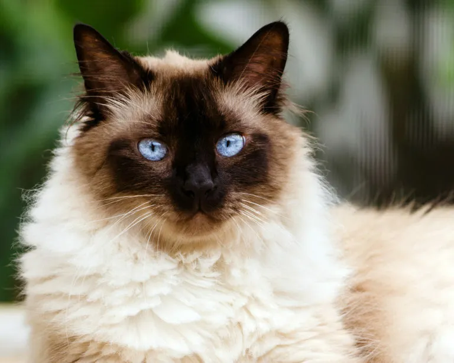
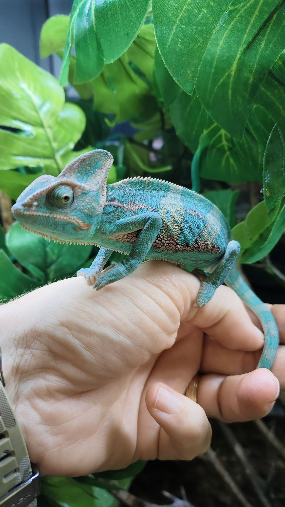
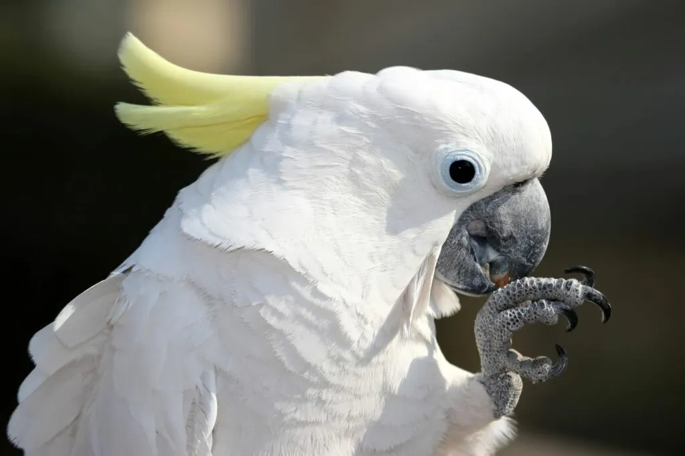

Carlitos (3 años)
Carlitos es mi segundo gato. Tranquilo, cariñoso y muy flojo. Su rutina gira entre comer y dormir. Es un gato noble y relajado, perfecto para momentos de calma.
Carlitos es mi segundo gato. Tranquilo, cariñoso y muy flojo. Su rutina gira entre comer y dormir. Es un gato noble y relajado, perfecto para momentos de calma.

Energética, curiosa y escurridiza. Tiene ojos azules y pelaje blanco. Siempre parece tener hambre.

El Doberman es una raza que admiro por su carácter protector e inteligencia. Una meta personal a futuro.

El Himalayo es una raza que combina la elegancia del Persa con los ojos azules del Siamés. De carácter tranquilo y afectuoso, es ideal para ambientes hogareños. Su pelaje largo y suave requiere cuidado diario, pero su compañía lo vale completamente.

El camaleón es uno de los reptiles más fascinantes del mundo. Su capacidad para cambiar de color según su estado de ánimo y el entorno lo hace único. Requiere cuidados específicos de temperatura y humedad, pero observarlo es toda una experiencia.

La cacatúa es un ave inteligente, expresiva y llena de personalidad. Es capaz de imitar sonidos y palabras, y forma vínculos muy fuertes con sus dueños. Su cresta característica y su carácter juguetón la convierten en una compañera difícil de olvidar.